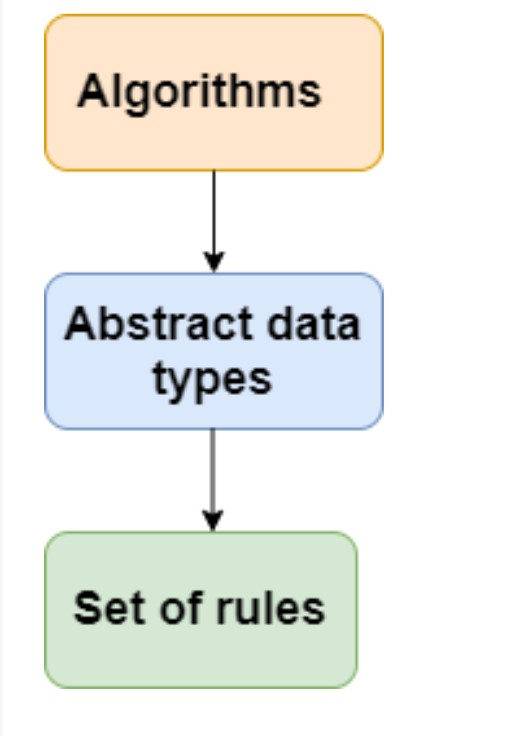

ડેટા સ્ટ્રક્ચર નામ પોતે સૂચવે છે કે મેમરીમાં ડેટા ગોઠવે છે. મેમરીમાં ડેટાને વ્યવસ્થિત કરવાની ઘણી રીતો છે કારણ કે આપણે પહેલાથી જ ડેટા સ્ટ્રક્ચર્સમાંથી એક, એટલે કે, સી ભાષામાં એરે જોયા છે. અરે એ મેમરી તત્વોનો સંગ્રહ છે જેમાં ડેટા ક્રમિક રીતે સંગ્રહિત થાય છે, એટલે કે, એક પછી એક. બીજા શબ્દોમાં કહીએ તો, આપણે કહી શકીએ કે એરે તત્વોને સતત સંગ્રહિત કરે છે. ડેટાનું આ સંગઠન ડેટા સ્ટ્રક્ચર્સની એરેની મદદથી કરવામાં આવે છે. મેમરીમાં ડેટાને ગોઠવવાની અન્ય રીતો પણ છે. ચાલો વિવિધ પ્રકારના ડેટા સ્ટ્રક્ચર્સ જોઈએ.
The data structure is not any programming language like C, C++, java, etc. It is a set of algorithms that we can use in any programming language to structure the data in the memory. To structure the data in memory, 'n' number of algorithms were proposed, and all these algorithms are known as Abstract data types. These abstract data types are the set of rules.
ડેટા સ્ટ્રક્ચર એ C, C++, java વગેરે જેવી કોઈ પ્રોગ્રામિંગ લેંગ્વેજ નથી. તે એલ્ગોરિધમ્સનો સમૂહ છે જેનો ઉપયોગ આપણે મેમરીમાં ડેટાને સ્ટ્રક્ચર કરવા માટે કોઈપણ પ્રોગ્રામિંગ ભાષામાં કરી શકીએ છીએ.

• ડેટા સ્ટ્રક્ચર્સના પ્રકાર
(1)મૂળભૂત માહિતી માળખું
(2)બિન-મૂળભૂત માહિતી માળખું
(1)Primitive Data structure
(1)મૂળભૂત માહિતી માળખું
The primitive data structures are primitive data types. The int, char, float, double, and pointer are the primitive data structures that can hold a single value.
આદિમ ડેટા સ્ટ્રક્ચર્સ આદિમ ડેટા પ્રકારો છે. int, char, float, double, and pointer એ આદિમ ડેટા સ્ટ્રક્ચર્સ છે જે એક મૂલ્યને પકડી શકે છે.
(2)બિન-મૂળભૂત માહિતી માળખું
The non-primitive data structure is divided into two types:
(1)Linear data structure
(2)Non-linear data structure
બિન-આદિમ ડેટા માળખું બે પ્રકારોમાં વહેંચાયેલું છે:
(1)રેખીય ડેટા સ્ટ્રક્ચર
(2)બિન-રેખીય ડેટા માળખું
(1)Linear Data Structure
(1)રેખીય ડેટા સ્ટ્રક્ચરThe arrangement of data in a sequential manner is known as a linear data structure. The data structures used for this purpose are Arrays, Linked list, Stacks, and Queues. In these data structures, one element is connected to only one another element in a linear form.
When one element is connected to the 'n' number of elements known as a non-linear data structure. The best example is trees and graphs. In this case, the elements are arranged in a random manner.
ક્રમિક રીતે ડેટાની ગોઠવણીને લીનિયર ડેટા સ્ટ્રક્ચર તરીકે ઓળખવામાં આવે છે. આ હેતુ માટે ઉપયોગમાં લેવાતા ડેટા સ્ટ્રક્ચર્સ એરે, લિંક્ડ લિસ્ટ, સ્ટેક્સ અને કતાર છે. આ ડેટા સ્ટ્રક્ચર્સમાં, એક તત્વ માત્ર એક બીજા તત્વ સાથે રેખીય સ્વરૂપમાં જોડાયેલ છે.જ્યારે એક તત્વ બિન-રેખીય ડેટા સ્ટ્રક્ચર તરીકે ઓળખાતા તત્વોની 'n' સંખ્યા સાથે જોડાયેલ હોય છે. શ્રેષ્ઠ ઉદાહરણ વૃક્ષો અને આલેખ છે. આ કિસ્સામાં, તત્વો રેન્ડમ રીતે ગોઠવાય છે.
We will discuss the above data structures in brief in the coming topics. Now, we will see the common operations that we can perform on these data structures.
અમે આગામી વિષયોમાં ઉપરોક્ત ડેટા સ્ટ્રક્ચરની ટૂંકમાં ચર્ચા કરીશું. હવે, આપણે સામાન્ય કામગીરી જોઈશું જે આપણે આ ડેટા સ્ટ્રક્ચર્સ પર કરી શકીએ છીએ.
Data structures can also be classified as:
Static data structure:
It is a type of data structure where the size is allocated at the compile time. Therefore, the maximum size is fixed.
It is a type of data structure where the size is allocated at the run time. Therefore, the maximum size is flexible.
તે ડેટા સ્ટ્રક્ચરનો એક પ્રકાર છે જ્યાં કમ્પાઇલ સમયે કદ ફાળવવામાં આવે છે. તેથી, મહત્તમ કદ નિશ્ચિત છે.
તે ડેટા સ્ટ્રક્ચરનો એક પ્રકાર છે જ્યાં રન સમયે માપ ફાળવવામાં આવે છે. તેથી, મહત્તમ કદ લવચીક છે.
| Searching: |
We can search for any element in a data structure. અમે ડેટા સ્ટ્રક્ચરમાં કોઈપણ તત્વ શોધી શકીએ છીએ. |
| Sorting: |
We can sort the elements of a data structure either in an ascending or descending order. અમે ડેટા સ્ટ્રક્ચરના ઘટકોને ચડતા અથવા ઉતરતા ક્રમમાં સૉર્ટ કરી શકીએ છીએ. |
| Insertion: |
We can also insert the new element in a data structure. અમે ડેટા સ્ટ્રક્ચરમાં નવું તત્વ પણ દાખલ કરી શકીએ છીએ. |
| Updation: |
We can also update the element, i.e., we can replace the element with another element.
અમે એલિમેન્ટને પણ અપડેટ કરી શકીએ છીએ, એટલે કે, અમે એલિમેન્ટને બીજા એલિમેન્ટ સાથે બદલી શકીએ છીએ. |
| Deletion: | We can also perform the delete operation to remove the element from the data structure.
અમે ડેટા સ્ટ્રક્ચરમાંથી એલિમેન્ટને દૂર કરવા માટે ડિલીટ ઓપરેશન પણ કરી શકીએ છીએ. |
A data structure is a way of organizing the data so that it can be used efficiently. Here, we have used the word efficiently, which in terms of both the space and time. For example, a stack is an ADT (Abstract data type) which uses either arrays or linked list data structure for the implementation. Therefore, we conclude that we require some data structure to implement a particular ADT. An ADT tells what is to be done and data structure tells how it is to be done. In other words, we can say that ADT gives us the blueprint while data structure provides the implementation part. Now the question arises: how can one get to know which data structure to be used for a particular ADT?. As the different data structures can be implemented in a particular ADT, but the different implementations are compared for time and space. For example, the Stack ADT can be implemented by both Arrays and linked list. Suppose the array is providing time efficiency while the linked list is providing space efficiency, so the one which is the best suited for the current user's requirements will be selected.
ડેટા સ્ટ્રક્ચર એ ડેટાને વ્યવસ્થિત કરવાની એક રીત છે જેથી તેનો અસરકારક રીતે ઉપયોગ કરી શકાય. અહીં, અમે શબ્દનો અસરકારક રીતે ઉપયોગ કર્યો છે, જે જગ્યા અને સમય બંનેના સંદર્ભમાં છે. ઉદાહરણ તરીકે, સ્ટેક એ એડીટી (એબ્સ્ટ્રેક્ટ ડેટા પ્રકાર) છે જે અમલીકરણ માટે ક્યાં તો એરે અથવા લિંક્ડ લિસ્ટ ડેટા સ્ટ્રક્ચરનો ઉપયોગ કરે છે. તેથી, અમે નિષ્કર્ષ પર આવીએ છીએ કે ચોક્કસ ADT ને અમલમાં મૂકવા માટે અમને કેટલાક ડેટા માળખાની જરૂર છે. ADT જણાવે છે કે શું કરવાનું છે અને ડેટા સ્ટ્રક્ચર જણાવે છે કે તે કેવી રીતે કરવું. બીજા શબ્દોમાં કહીએ તો, આપણે કહી શકીએ કે ADT આપણને બ્લુપ્રિન્ટ આપે છે જ્યારે ડેટા સ્ટ્રક્ચર અમલીકરણનો ભાગ પૂરો પાડે છે. હવે પ્રશ્ન ઊભો થાય છે: કોઈ ચોક્કસ ADT માટે કયા ડેટા સ્ટ્રક્ચરનો ઉપયોગ કરવો તે કેવી રીતે જાણી શકાય?. જેમ કે વિવિધ ડેટા સ્ટ્રક્ચર્સ ચોક્કસ ADT માં લાગુ કરી શકાય છે, પરંતુ સમય અને જગ્યા માટે વિવિધ અમલીકરણોની તુલના કરવામાં આવે છે. ઉદાહરણ તરીકે, સ્ટેક એડીટી એરે અને લિંક કરેલ સૂચિ બંને દ્વારા લાગુ કરી શકાય છે. ધારો કે એરે સમય કાર્યક્ષમતા પ્રદાન કરી રહ્યું છે જ્યારે લિંક કરેલ સૂચિ જગ્યા કાર્યક્ષમતા પ્રદાન કરી રહી છે, તેથી વર્તમાન વપરાશકર્તાની આવશ્યકતાઓ માટે સૌથી યોગ્ય હોય તે પસંદ કરવામાં આવશે